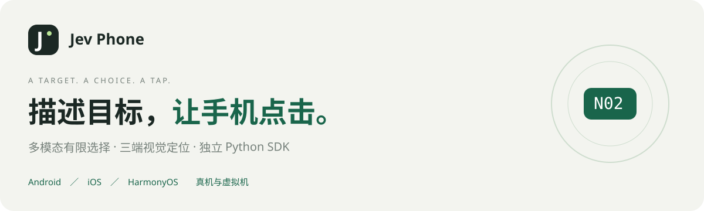
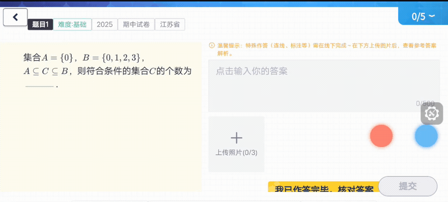
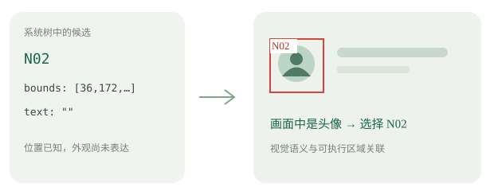
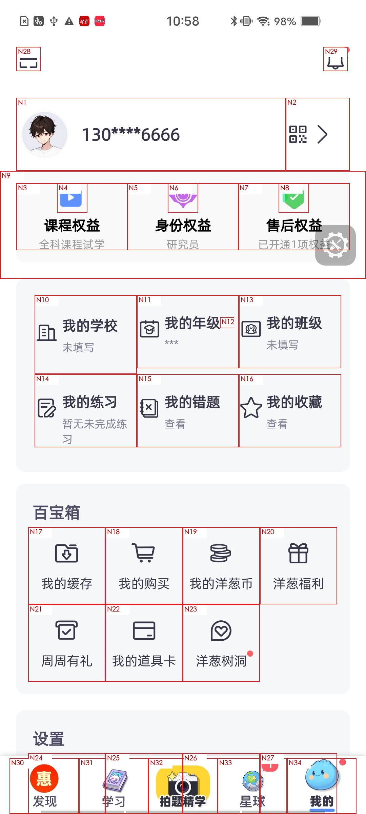

独立 Python SDK · 三端真机／虚拟机 · 单步与多步点击 · 当前版本 0.1.0
开始使用 · 执行流程 · 三端接入 · 体验 Demo
让模型选编号，让设备完成点击
Jev Phone 把已经明确的语义点击目标，绑定到当前设备画面中的可执行区域。系统树提供几何位置，截图补充视觉语义；模型只在当帧编号、NOT_FOUND 和 UNCERTAIN 中选择，平台驱动完成坐标点击。
你可以只调用一步，也可以提交一段内容。SDK 按标点和换行拆步，每一步只请求当前目标，沿用 V3 已调的图片对比衔接，执行到完成或失败停止。外部 AI、Planner、脚本和业务系统都可以接入，不依赖 AI Phone、数据库或网页。
点击通道的实际画面

来自本地既有 AI Phone / Jev 集成实验的视频，裁出手机操作区域；原速播放。本片展示实际操作过程，不是独立 SDK 的速度基准。
它怎样工作
整段输入 → 符号拆步 → 当前目标定位与点击 → 图片对比衔接 → 下一步。

树给出区域，画面表达外观，编号将模型选择绑定到可执行坐标。编号每步重新生成；模型不接收整段任务或之前步骤。
开始使用
需要 Python 3.10+。克隆仓库或解压交付包后安装：
python3 -m venv .venv
.venv/bin/pip install -e '.[android]'
from getpass import getpass
from jev_phone import AndroidClicker, RunFailure
with AndroidClicker("YOUR_ADB_SERIAL", getpass("OpenRouter Key: ")) as phone:
try:
report = phone.run("点击显示与亮度；点击护眼模式")
print(report["results"])
print(report["transitions"])
except RunFailure as error:
print(error.report) # 已完成结果、失败步骤；后续不执行
只需一步时，使用 phone.click("点击显示与亮度")。run() 按中英文逗号、分号、句号、问号、感叹号和换行机械切分，最多20步；每段只表达一个点击目标。标点位于目标名字内部时也会切分。
三端接入
| 平台 |
真机／虚拟机 |
安装 |
调用入口 |
| Android |
均已贯通 |
pip install -e '.[android]' |
AndroidClicker(serial, api_key) |
| iOS |
均已贯通 |
pip install -e . |
IOSClicker(wda_url, api_key) |
| HarmonyOS |
均已贯通 |
pip install -e '.[harmony]' |
HarmonyClicker(serial, api_key) |
| Android · 真机／虚拟机 | iOS · 真机／虚拟机 | HarmonyOS · 真机／虚拟机 |
|---|
 |  |  |
沿用 Demo 的三张原始编号图，不改图；图片分别来自安卓真机、iOS虚拟机、鸿蒙虚拟机的历史实验。平台标题表示当前 SDK 已贯通的支持范围。
安卓准备 ADB / UiAutomator2，iOS 由使用者准备 WDA，鸿蒙准备 HDC / UITest。SDK 不管理签名、设备池和虚拟机生命周期。详细步骤见 三端设备准备。
不同设备同时执行
.venv/bin/pip install -e '.[android,harmony]'
.venv/bin/python examples/parallel.py examples/devices.json
修改配置中的设备编号、WDA地址和目标序列。不同设备并行，同设备按顺序执行；每台设备的候选、画面和结果独立。同进程的同设备调用共享锁，跨进程设备占用由接入方协调。
为每一步保留清楚的结果
results：目标、选中编号、截图像素坐标、平台、设备和分段耗时。transitions：步骤间图片对比耗时、采样次数与返回状态。on_event：观察、编号图、选择、点击返回和步骤衔接事件。RunFailure.report：保留已完成结果与失败步骤，停止后续执行。
图片对比参数沿用 V3：安卓100ms、鸿蒙0ms、iOS200ms额外采样间隔。稳定末帧直接用于下一步，不重复截图，不在每步结束后追加展示截图。模型请求往返与组件自身处理分别计时，整段耗时包含步骤衔接。
体验 Demo
Demo 是 SDK 的一个使用者，保留安卓只读镜像、输入、逐步日志与实际模型编号图。外部程序使用 SDK 无需启动 Demo。
.venv/bin/pip install -e '.[demo]'
.venv/bin/jev-phone-demo
打开 http://127.0.0.1:8765/，选择安卓设备、填写 Key，点击“准备并连接”。Demo 镜像需要本机已有 adb、scrcpy、ffmpeg。右上角“技术与接入说明”展示组件结构与接入方式。
模型支持 OpenRouter 多模态 Decisions 和 OpenAI 官方 Decisions；用 provider="openai" 选择官方通道，两种 Key 不可混用。Demo 刷新后清除 Key 和模型连接；SDK 示例从环境变量或终端隐藏输入获取 Key，不随代码分发。
接入资料
当前提供点击能力；输入、滚动及其他手势由接入方扩展。driver_completed 表示点击驱动返回，业务判断仍由调用方完成。
开源仓库：dongxinsuperman/jev-phone。采用 MIT许可证；当前尚未发布到PyPI。